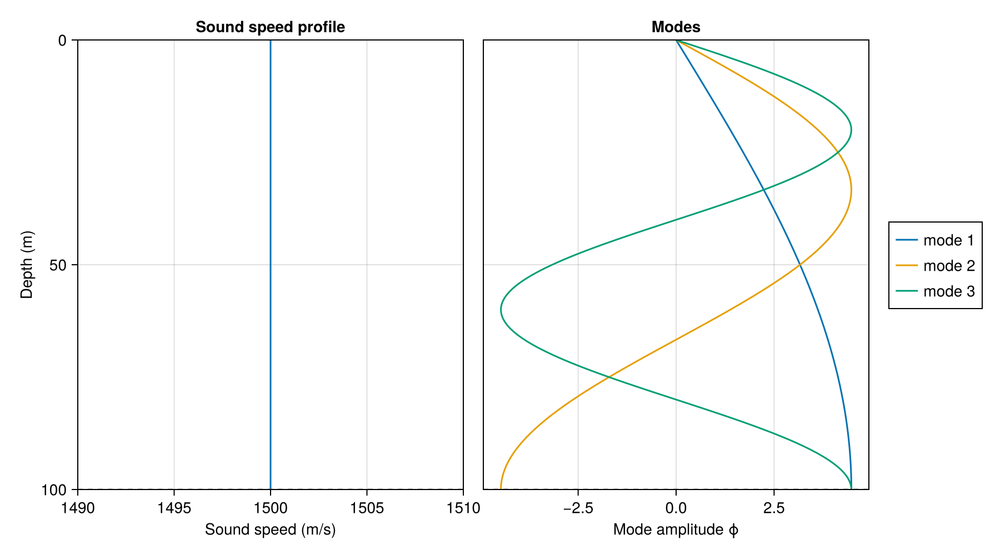
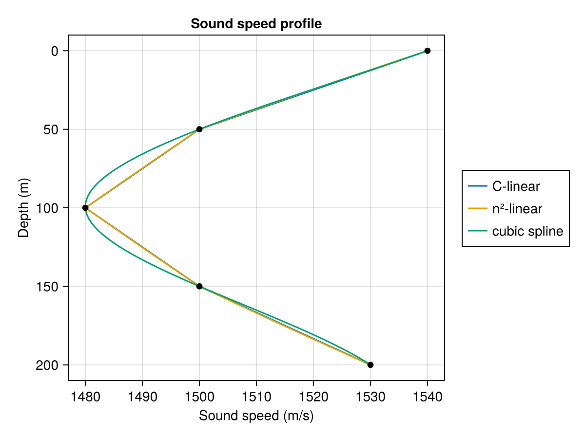

Environments
An UnderwaterEnv describes a range-independent waveguide: how sound speed, density and attenuation vary with depth, where the layer interfaces are, what lies below the last one, and what closes the problem at the top and bottom. This page covers how to build one and every option it takes.
The three matrices
Kraken.jl builds environments from the same three records an Acoustics Toolbox .env file holds, so an environment written for KRAKEN translates directly.
ssp, the sound-speed table: one row per sample, from the surface down, with six columns.
| column | quantity | units |
|---|---|---|
| 1 | depth z, positive downwards | m |
| 2 | compressional sound speed cp | m/s |
| 3 | shear sound speed cs (read, not used) | m/s |
| 4 | density ρ | kg/m³ |
| 5 | compressional attenuation αp | see Attenuation |
| 6 | shear attenuation αs (read, not used) |
layers: one row per medium. Column 3 is the depth of the medium's lower interface, and the last row's is the depth of the bottom boundary. The first two columns are unused and are kept for the layout's sake.
sspHS: two rows in the ssp layout, the half-spaces above and below. Only the bottom row is read, and only when the bottom boundary is an acoustic half-space: its sound speed, density and attenuation become the environment's cb, ρb and αb.
A KRAKEN .env file gives density in g/cm³. Kraken.jl uses kg/m³ throughout, so water is 1000.0, not 1.0.
Here is a Pekeris waveguide written out by hand: 100 m of isovelocity water over a faster, denser half-space.
ssp = [
0.0 1500.0 0.0 1000.0 0.0 0.0
100.0 1500.0 0.0 1000.0 0.0 0.0
]
layers = [0.0 0.0 100.0]
sspHS = [
0.0 343.0 0.0 1.21 0.0 0.0
100.0 1600.0 0.0 1500.0 0.0 0.0
]
env = UnderwaterEnv(ssp, layers, sspHS)
kraken_jl(env, 100.0)NormalModeSolution{Float64}(5 modes)Layers and interfaces
A layer interface is written as two rows at the same depth, one carrying the properties above it and one the properties below. one_layer_env puts a sediment layer under the water this way. It writes the second row at z0 + eps(z0). Writing both at exactly z0, as a .env file does, is equivalent, because the profiles move the second of two equal depths down by eps themselves:
ssp, layers, sspHS = one_layer_env()
ssp4×6 Matrix{Float64}:
0.0 1500.0 0.0 1000.0 0.0 0.0
100.0 1500.0 0.0 1000.0 0.0 0.0
100.0 1550.0 0.0 1500.0 0.0 0.0
120.0 1550.0 0.0 1500.0 0.0 0.0layers2×3 Matrix{Float64}:
0.0 0.0 100.0
0.0 0.0 120.0Profiles are sampled with soundspeed, density and attenuation. Depths are positive downwards, and a query exactly on an interface returns the medium above:
env = UnderwaterEnv(one_layer_env()...)
density(env.ρ, [99.0, 100.0, 101.0])3-element Vector{Float64}:
1000.0
1000.0
1500.0Outside the table the profiles extrapolate as a constant, so soundspeed(env.c, -50.0) silently returns the surface value. Depths are positive.
The finite-difference mesh is chosen per medium, at about 20 points per wavelength at the fastest sound speed that bounds the problem, and never fewer than 10 intervals per medium.
Standard environments
Five canned environments cover the common test cases. Each returns the (ssp, layers, sspHS) triple, and each is cross-validated against Fortran KRAKEN on the Validation page.
| Function | Waveguide |
|---|---|
pekeris_env | isovelocity water over a fluid half-space; also has a closed form |
one_layer_env | water, one isovelocity sediment layer, half-space |
one_layer_slope_env | as above, with a sound-speed gradient in the sediment |
two_layer_slope_env | water over two graded sediment layers |
munk_env | the Munk deep-water sound channel, 5000 m |
Their keyword arguments change the physical parameters without rewriting the matrices:
kraken_jl(UnderwaterEnv(pekeris_env(; depth=200.0, cb=1700.0)...), 100.0)NormalModeSolution{Float64}(13 modes)Boundary conditions
The problem is closed at the top of the water column and at the bottom of the last medium by one of three BoundaryConditions, passed as the top_bc and bottom_bc keywords.
| Type | KRAKEN option | Condition | Top | Bottom |
|---|---|---|---|---|
PressureRelease | V | pressure vanishes: a free surface or a vacuum | default | ✓ |
RigidBoundary | R | normal velocity vanishes | ✓ | ✓ |
AcousticHalfspace | A | a homogeneous fluid below, from sspHS | refused | default |
rigid = UnderwaterEnv(pekeris_env()...; bottom_bc=RigidBoundary())
kraken_jl(rigid, 100.0)NormalModeSolution{Float64}(13 modes)A perfect bottom traps more modes than a half-space does: nothing leaks out, so every mode with kᵣ > 0 is trapped rather than only those slower than the bottom. Over a perfect bottom the half-space row of sspHS is ignored.
The boundary condition shows in the mode shapes. A rigid bottom puts a pressure maximum on the seafloor, where a pressure-release surface puts a zero:
plot_modes(kraken_jl(rigid, 100.0); modes=1:3)
An acoustic half-space above the water constructs but is refused at solve time. Every KRAKEN case that uses one is a transparent surface with no trapped modes, an air half-space behaves as a pressure-release surface, and an ice cover is elastic, which Kraken.jl does not model.
Sound-speed interpolation
Between the samples of the ssp table the sound speed is interpolated in one of three ways, chosen with the ssp_interp keyword. On a coarsely sampled profile, the three options give wavenumbers that differ in the fourth significant digit.
ssp_interp | KRAKEN option | Interpolated quantity |
|---|---|---|
:c_linear (default) | C | c linear in depth |
:n2_linear | N | 1/c² linear in depth |
:cubic_spline | S | c, by a not-a-knot cubic spline |
Between two samples 100 m apart, 1500 and 1520 m/s, the first two options already disagree by 0.1 m/s halfway down:
z, c = [0.0, 100.0], [1500.0, 1520.0]
soundspeed(SampledSSP(z, c, :c_linear), 50.0), soundspeed(SampledSSP(z, c, :n2_linear), 50.0)(1510.0, 1509.9006647929928)On a coarse, strongly curved profile the spline departs visibly from the two linear rules. Here are five samples 50 m apart, drawn with plot_ssp under each interpolation:
duct_z = [0.0, 50.0, 100.0, 150.0, 200.0]
duct_c = [1540.0, 1500.0, 1480.0, 1500.0, 1530.0]
function duct(interp)
ssp = hcat(duct_z, duct_c, zeros(5), fill(1000.0, 5), zeros(5), zeros(5))
sspHS = [0.0 343.0 0.0 1.21 0.0 0.0; 200.0 1700.0 0.0 1800.0 0.0 0.0]
return UnderwaterEnv(ssp, [0.0 0.0 200.0], sspHS; ssp_interp=interp)
end
fig = plot_ssp(["C-linear" => duct(:c_linear), "n²-linear" => duct(:n2_linear), "cubic spline" => duct(:cubic_spline)])
CairoMakie.scatter!(fig.content[1], duct_c, duct_z; color=:black)
fig
C-linear and n²-linear differ by a fraction of a m/s between samples, too little to see at this scale. It is still enough to move kᵣ by about 1e-4, which the Validation page measures. All three agree at the samples. The spline is the one KRAKEN's CSPLINE computes, with the same not-a-knot end conditions; a natural spline would differ from it near the ends of a coarse profile by enough to change kᵣ.
Density and attenuation are interpolated linearly under every option.
KRAKEN splines each medium separately. Kraken.jl builds one interpolant for the whole column, and a spline through the doubled sample at an interface would overshoot on both sides of it, so :cubic_spline refuses a profile with more than one medium rather than returning a wrong answer.
Attenuation
The αp column, and the half-space's αb, give compressional attenuation. A lossy environment gives complex wavenumbers, whose negative imaginary part is the modal attenuation in nepers per metre of range:
lossy = UnderwaterEnv(pekeris_env(; αb=0.5)...) # 0.5 dB per wavelength in the seabed
sol = kraken_jl(lossy, 100.0)
sol.kr[1]0.41790772205330884 - 1.1729917607787853e-5imA lossless environment still returns real Float64 wavenumbers. The complex path is taken only when there is loss to model (see is_lossy), so nothing downstream of a lossless solve changes type.
Units
Attenuation units follow KRAKEN's six conventions, chosen with the atten_units keyword and defaulting to dB per wavelength. The characters are those of the third top-option character in a .env file.
atten_units | .env char | Meaning | Conversion to nepers/m |
|---|---|---|---|
:nepers_per_m | N | nepers/m | $\alpha$ |
:dB_per_m | M | dB/m | $\alpha / 8.6858896$ |
:dB_per_kmHz | F | dB/(m·kHz) ≡ dB/(km·Hz) | $\alpha f / 8685.8896$ |
:dB_per_wavelength | W | dB/wavelength (default) | $\alpha f / (8.6858896\,c)$ |
:Q | Q | quality factor | $\omega / (2 c \alpha)$ |
:loss_parameter | L | loss parameter | $\alpha \omega / c$ |
env = UnderwaterEnv(pekeris_env(; α0=1e-3)...; atten_units=:nepers_per_m)
env.atten_units, is_lossy(env)(:nepers_per_m, true)Four of the six depend on frequency, so an environment stores the value you gave it and converts it only once a frequency is known. attenuation_nepers_per_m does the conversion.
Perturbation method and its accuracy limits
Kraken.jl follows kraken.exe: it solves the real eigenproblem and adds the loss as a first-order perturbation of the eigenvalue,
\[\delta(k_r^2) = -2i\omega \int \frac{a(z)\,\psi(z)^2}{c(z)\,\rho(z)}\,\mathrm{d}z \;-\; \frac{i\,\omega\,a_b\,\psi(D)^2}{\gamma\,c_b\,\rho_b}, \qquad k_r = \sqrt{k_r^2 + \delta(k_r^2)}\]
with $\gamma = \sqrt{k_r^2 - (\omega/c_b)^2}$ and $a$ the attenuation in nepers/m. krakenc.exe is the separate Fortran program that solves the complex problem outright; that path is not implemented here.
Two separate things limit how accurately $\mathrm{Im}(k_r)$ comes out, and they affect opposite ends of the mode spectrum.
1. The perturbation is first order in $v = 2\omega a_b/(c_b\gamma^2)$, not in $a_b$. Since $\gamma \to 0$ at the bottom cutoff, v grows without bound for the least-trapped mode, so a strongly attenuating half-space degrades the top of the mode spectrum first. A full complex solve avoids this error; no refinement of the perturbation does. Put the loss in the water or a sediment layer (α0, or α1 in one_layer_env) when its accuracy matters.
2. Everything else is ordinary discretization, at second order. The energy normalization and the perturbation integral are both taken medium by medium, as kraken.f90 does, so a jump in $\rho$ or $\alpha$ at an interface is resolved exactly rather than averaged across. A single trapezoid straddling an interface would be enough to drop the whole quadrature to first order.
Neither affects $\mathrm{Re}(k_r)$. The measured agreement with kraken.exe for each case is on the Validation page.
Reading and writing .env files
The test suite can read an Acoustics Toolbox .env file into an UnderwaterEnv and write one back out, including the boundary, interpolation and attenuation options above. That code lives in test/reference/ rather than in the package, because it exists to drive the Fortran comparison and is not public API. To reuse an existing environment file:
using Kraken
include(joinpath(pkgdir(Kraken), "test", "reference", "KrakenReference.jl"))
case = KrakenReference.read_env_file("path/to/case.env")
sol = kraken_jl(case.env, first(case.freqs))KrakenReference.write_env_file(path, env, freq) goes the other way. Densities are converted between the file's g/cm³ and Kraken.jl's kg/m³ in both directions.